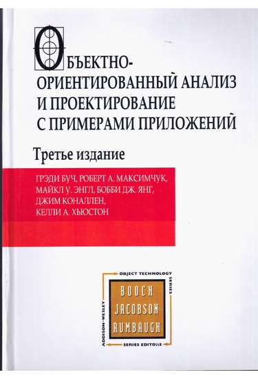

Гради Буч. Объектно-ориентированный анализ и проектирование с примерами приложений

Краткое описание
Книга не для начинающих, так как больше похожа на подведение итогов и теоретическое обоснование, чем практический самоучитель по объектно-ориентированному мышлению.
Подробное описание:
вторы описывают объектные методы решения сложных проблем, связанные с разработкой систем и программного обеспечения. Используя многочисленные примеры, они иллюстрируют основные концепции объектно-ориентированного подхода на примере разработки систем управления, сбора данных и искусственного интеллекта. Читатели найдут в книге практичные советы, касающиеся важных вопросов анализа, проектирования, реализации и оптимального управления проектами. Книга будет полезна системным аналитикам и архитекторам, программистам, преподавателям и студентам высших учебных заведений, а также всем специалистам по информационным технологиям.
Характеристики книги
- Название: Объектно-ориентированное мышление
- Серия: -
- Тип: Отдельное издание
- Издательство: Вильямс
- Язык издания: Русский
- Год выпуска: 2017
- Тип обложки: Твердый переплет
- Вес в упаковке: 1085г